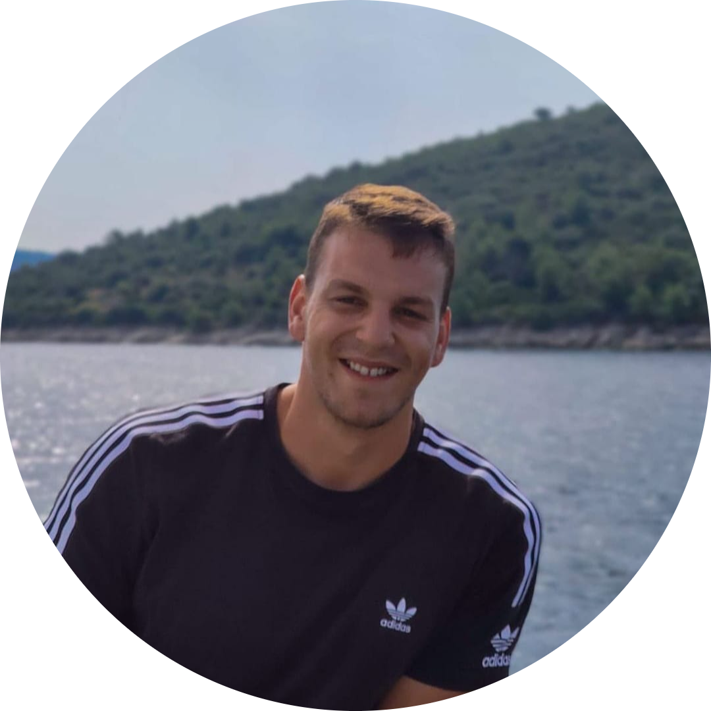

|  | Tomislav MatoševićStudent at University Department of Professional Studies |
I graduated from the High School of Electrical Engineering in Split elective in electrotechnics. And recently graduated from the University of Electrical Engineering, Mechanical Engineering and Naval Architecture, with a bachelor's degree in electrical engineering specialising in electronics. I continued studying at the department of university studies in Split, at the department of electrical engineering, majoring in integrated communication technology.
I am a self-taught web developer with a passion for creating dynamic and user-friendly websites. I have a strong foundation in HTML, CSS, and JavaScript and have been continuously learning and expanding my knowledge through online courses and personal projects. I am familiar with popular framework such as React and am always eager to learn and implement new technologies in my projects. I am confident in my ability to design and develop functional and visually appealing websites.| Works | Dates |
|---|---|
| Assistant in the procurement department - Brodosplit d.o.o | 01/07/2017 – 01/10/2017 Split, Croatia |
| Rental service represetative for cars - Avant car d.o.o | 01/06/2021 – 01/10/2021 Kaštela, Croatia |
| Electronics engineering internship - Global offshore engineering d.o.o | 01/04/2022 – 01/06/2022 Ankara, Turkey |
| Web development | ⭐⭐⭐⭐ |
| MS Office | ⭐⭐⭐⭐⭐ |
| Object Oriented Programming | ⭐⭐⭐ |
| Version control (git) | ⭐⭐⭐⭐⭐ |
| Reasearch and analytical skills | ⭐⭐⭐⭐⭐ |